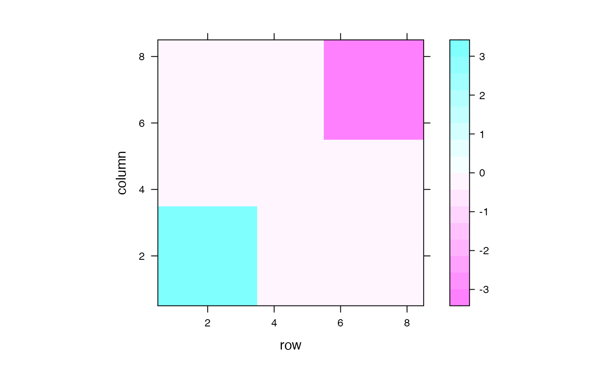
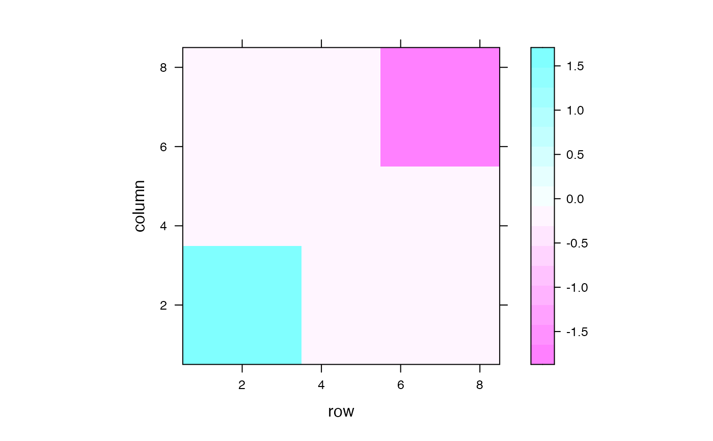

fusedlasso_inf.RdThis functions tests the null hypothesis of no difference in means between
connected components c1 and c2 of the output of the graph fused
lasso solution. The ordering are numbered as per the results of the fusedlasso
function in the genlasso package.
fusedlasso_inf( y, D, c1, c2, method, sigma, K = NULL, c = NULL, early_stop = NULL )
| y | Numeric vector; \(p\) dimensional observed data |
|---|---|
| D | Numeric matrix; \(m\) by \(p\) penalty matrix, i.e., the oriented incidence matrix over the underlying graph |
| c1, c2 | Integers selecting the two clusters to test, as indexed by the results of
|
| method | One of "K" or "CC", which indicates which conditioning set to use |
| sigma | Numeric; noise standard deviation for the observed data, a non-negative number. |
| K | Integer; number of steps to run the dual-path algorithm. It must be specified if method=="K". |
| c | Integer; the targeted number of connected components. It must be specified if method=="CC". |
| early_stop | Numeric; specify when the truncation set computation should be terminated. The default is NULL, which indicates infinity. |
Returns a list with elements:
Union the p-value proposed in Chen et al. (2021+)
truncation_set the conditioning set of Chen et al. (2021+) stored as Intervals class
test_stats test statistics: the difference in means of two connected components
beta_hat Graph fused lasso estimates
connected_comp Estimated connected component
Naive the naive p-value using a z-test
Hyun the p-value proposed in Hyun et al. (2018)
hyun_set the conditioning set of Hyun et al. (2018) stored as Intervals class
Currently, we support two different conditioning sets: conditioning set 1 is based on the output after K steps dual-path algorithm; and conditioning set 2 is based on the output of the after the dual-path algorithm yields c connected components in the output.
Input:
Consider the generative model \(Y_t = \beta_t + \epsilon_t, \epsilon_t \sim N(0, \sigma^2)\), where the underlying signal \(\beta\) is assumed to be piecewise constant with respect to an underlying graph. The fused lasso estimate minimizes the following objective function $$minimize_{\beta} \frac{1}{2} \sum_{i=1}^{p} ( y_i - \beta_i )^2 + \lambda \sum_{(i,j)\in E}|\beta_i-\beta_j|,$$ where E is the edge set of the underlying graph. The solution \(\hat{\beta}\) can then be segment into connected components; that is, the set of \(\hat{\beta}\) that takes on the same value, and are connected in the original graph.
Now suppose we want to test whether the means of two estimated connected components c1 and c2
are equal; or equivalently, the null hypothesis of the form \(H_{0}: \nu^T \beta = 0\) versus
\(H_{1}: \nu^T \beta \neq 0\) for suitably chosen \(\nu\).
This function computes the following p-value: $$P(|\nu^T Y \geq \nu^T y | \hat{c}_1, \hat{c}_2 \in CC_K(Y), \Pi_\nu^\perp Y = \Pi_\nu^\perp y)$$, where \(CC_K(Y)\) is the set of connected components estimated from Y via K steps of dual-path algorithm that solves the fused lasso objective, and \(\Pi_\nu^\perp\) is the orthogonal projection to the orthogonal complement of \(\nu\). In particular, this p-value controls the selective Type I error and has higher power than an existing method by Hyun et al. (2018). Readers can refer to the Section 3 in Chen et al. (2021+) for more details.
Chen YT, Jewell SW, Witten DM. (2021+) More powerful selective inference for the graph fused lasso Hyun S, G’Sell M, Tibshirani RJ. (2018) Exact post-selection inference for the generalized lasso path. Electron J Stat.
lev1 <- 0 # mean for group 1 lev2 <- 3 # mean (absolute value) for group 2/3 sigma <- 1 # level of noise nn <- 8 # grid size Dmat <- graph2D_Dmat(nn^2) # generate D matrix for the 2D fused lasso ### Create the underlying signal A <- matrix(lev1, ncol=nn, nrow = nn) A[1:round(nn/3),1:round(nn/3)] <- 1*lev2 A[(nn-2):(nn),(nn-2):(nn)] <- -1*lev2 ### Visualize the underlying signal lattice::levelplot(A)set.seed(2005) A.noisy <- A + rnorm(nn^2,mean=0,sd=sigma) y <- do.call(c,lapply(1:nrow(A.noisy),function(irow)A.noisy[irow,])) ### Run a test for a difference in means between estimated clusters 1 and 2 result_demo <- fusedlasso_inf(y=y, D=Dmat, c1=1, c2=2, method="K", sigma=sigma, K=13) ### Check the graph fused lasso estimate beta_hat_K <- matrix(result_demo$beta_hat, nrow = nrow(A)) lattice::levelplot(beta_hat_K)